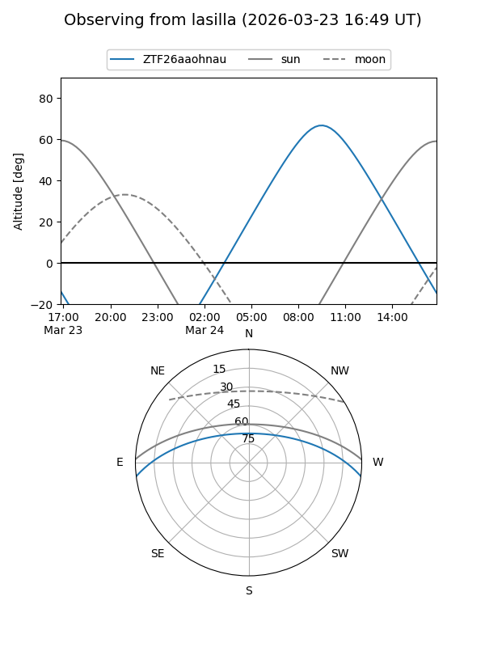
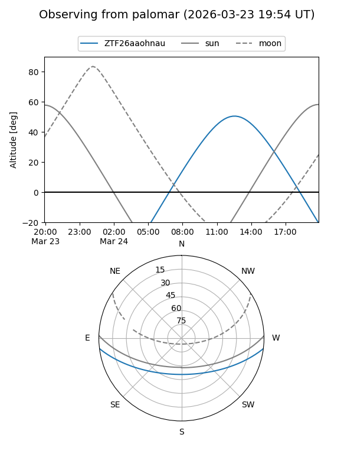

ZTF26aaohnau
Target ZTF26aaohnau at 2026-03-24 14:10
Aliases and brokers:
FINK: link
Lasair: link
ALeRCE: link
alt names
ZTF26aaohnau (ztf,fink_ztf)
Coordinates:
equatorial (ra, dec) = 253.0039,-6.02265
equatorial (HMS+DMS) = 16:52:00.94,-06:01:21.53
galactic (l, b) = (12.6276,+23.12645)
Flags:
Photometry:
last ztfg=14.59
1 ztfg detections
Lightcurve
Visibility


Additional plots